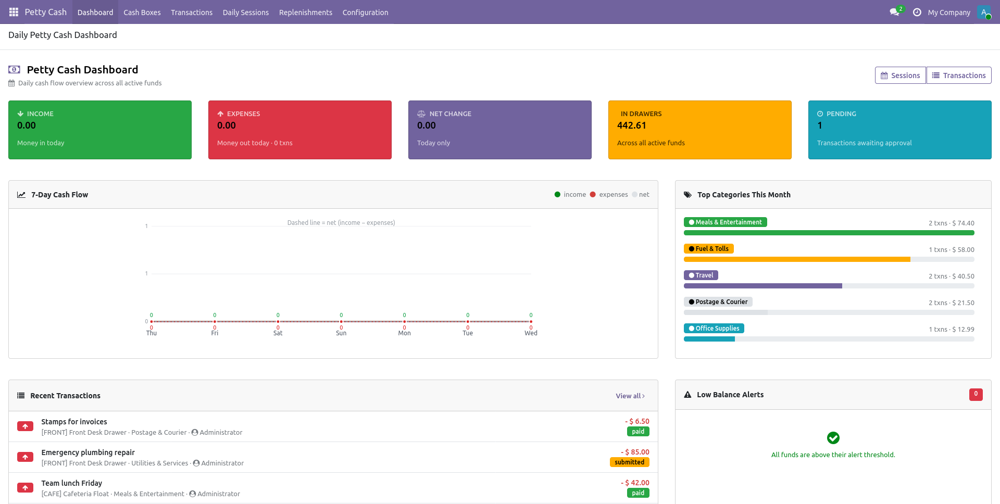
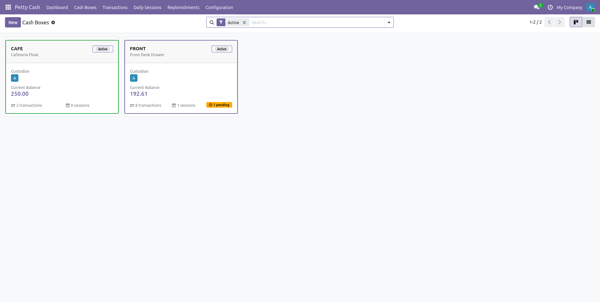
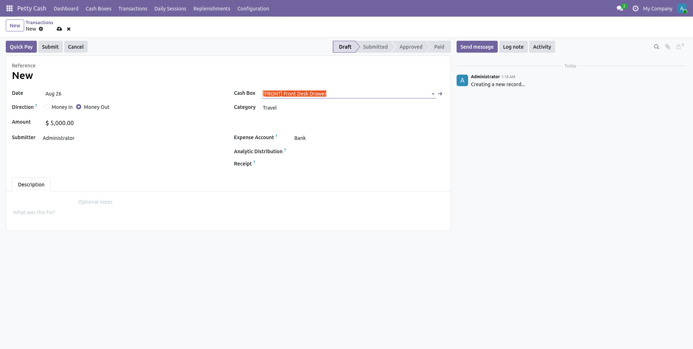
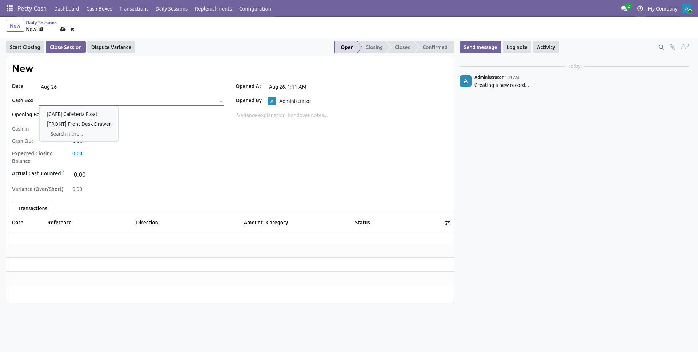
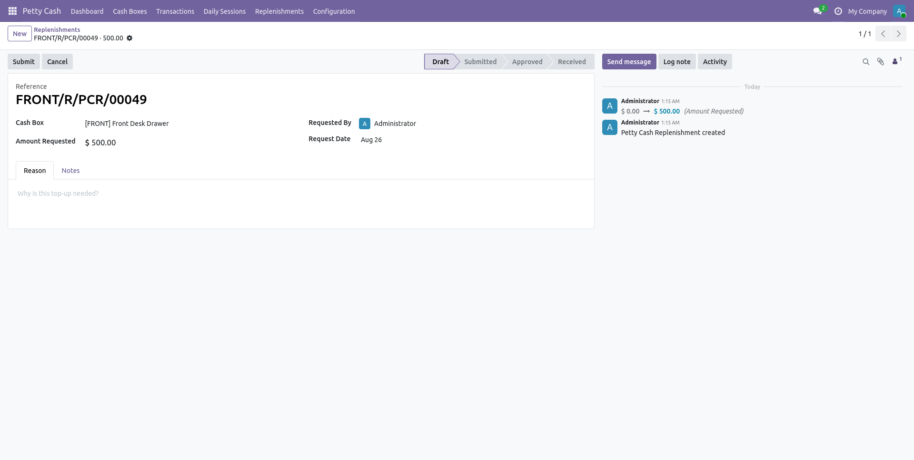

Daily-first cash management with a beautiful expense dashboard. Open the drawer every morning, capture every transaction through the day, close at end-of-day with variance surfaced in real time.

Each drawer has a custodian, an opening balance and an alert threshold. Opening the drawer in the morning, closing it at night — Petty Cash Daily treats those as first-class operations.
Configure a per-fund limit. Below it: instant pay. Above it: routes to a manager for approval. The cashier doesn't have to think about it.
When the balance drops below the threshold, request a top-up, manager approves, cashier confirms receipt — the cash lands back in the drawer as a paid Money-In transaction.
Today's income, expenses, net change, total in drawers and pending approvals — five tiles at the top of the home page. Below: 7-day cash flow, top categories, recent transactions, alerts.
Every daily session compares expected to actual. The variance turns red or green on the form, in the tree view, and in the chatter. Managers have a clean audit trail.
Built on account, hr and
mail. Uses Odoo's privilege/group system, chatter,
analytic distribution and accounting journals. No external
services.




Three preconfigured groups keep permissions simple:
Day-to-day: opens sessions, submits expenses, requests replenishments. Can see transactions in their scope.
Approves transactions, closes sessions, configures funds and categories. Full access.
Read-only across all funds. Perfect for finance controllers and external auditors reviewing the record.
Built for Odoo 19 · LGPL-3 · install in two clicks
Install Now